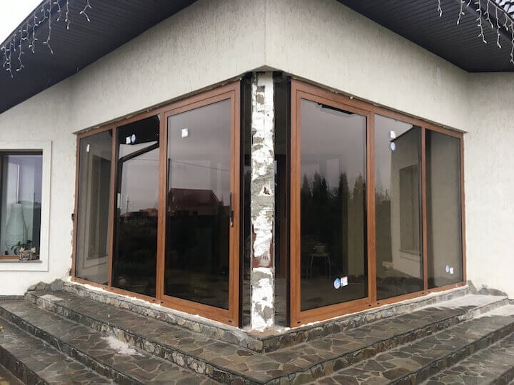

Скляні двері: поєднання надійності і краси.
У приватному будинку набагато більше можливостей для сміливих експериментів з інтер'єром і створення по-справжньому цікавого дизайну. Як правило, планування створюється, вже з огляду на основні потреби господарів, а от подальше перетворення будинку залежить від польоту фантазії його володарів.
Сучасні технології дозволяють експериментувати зі звичними речами і використовувати в їх виробництві зовсім незвичайні матеріали. Прикладом цього може стати такий елемент інтер'єру і екстер'єру, як скляні вхідні двері. Класичний матеріал для виготовлення дверей - це дерево, пластик або алюміній, який останнім часом завойовує все більше популярності. Уявити матеріалом для виготовлення дверей скло, на перший погляд, здається безглуздістю, але чи настільки абсурдна ця ідея?
Особливості скляних дверейДвері - це не просто декоративний елемент інтер'єру. Вони несуть в собі чітку практичну функцію - з'єднання ізолюючих просторів, міцний захист для всього будинку від холоду і проникнення. Ідея застосування скла у виготовленні дверей не нова, але в основному його використовували фрагментарно, вставляючи як прикраса в дверні конструкції.
Просте скло дійсно досить крихке і використовувати його як основний матеріал при виготовленні дверей досить ризиковано. Але для тих, хто все ж не хоче розлучатися з ідеєю скляних вхідних дверей, на допомогу приходять нові розробки в цій сфері.
При створенні дверей використовується загартоване скло. Ця технологія існує порівняно недавно, і заснована вона на тому, що звичайне скло піддається термічній і хімічній обробці. Це збільшує його міцність і стійкість до температурних перепадів в п'ять разів у порівнянні зі звичайним склом.
Також ця технологія досить безпечна, так як, навіть якщо скло розіб'ється, воно разсиплеться на дрібні осколки, але абсолютно не гострі. Ця якість дозволяє більш широко використовувати скло в побутових умовах. Додатковим матеріалом, яким можна убезпечити експлуатацію скляних дверей, є захисна плівка. Найтоншим шаром вона наклеюється на скло, і в разі пошкодження осколки не розсипаються, а залишаються приклеєними до неї. Подібна технологія використовується і в автомобільних склах.
Можливості і нюанси експлуатаціїСеред найпоширеніших і дешевих варіантів скляних вхідних дверей - це вже звичні склопакети. Такі двері будуть досить міцні і функціональні, але цей варіант частіше використовується в офісних приміщеннях і навряд чи підійде для оформлення приватного будинку. Щоб зробити їх більш домашніми і затишними, можна спробувати застосувати каркасом і поміняти пластик на дерево або метал.
Але по-справжньому використовувати всі переваги скла можна, конструюючи дверний проріз при виході на веранду або інше літнє приміщення. Такі двері будуть відкривати прекрасний вид в сад, об'єднуючи в єдиний зоровий простір будинок і вулицю.
Найчастіше скло використовують саме в розсувних дверних системах, які створюють ефектний фасад приватного будинку з його індивідуальним плануванням. Якщо такі двері виходять у середину подвір'я, їх використовують ще і як панно для декору. Можна покрити їх плівкою з цікавим принтом, оформити плівковим або піскоструминним вітражем або навіть розписати спеціальними фарбами. Такий варіант скляних дверей відкриває безмежні можливості для цікавого дизайну.
Вхідні двері зі скла - далеко не економний варіант, і навряд чи їх можна буде знайти в магазині готової продукції. Швидше за все, доведеться робити їх на замовлення, враховуючи, що і розміри в приватному будинку, як правило, нестандартні. За основу можна брати не тільки звичайне прозоре скло, а й кольорове або фактурне, яке не потребує додаткового декору. Підбірка фурнітури для таких дверей також буде досить дорогою, але готовий результат з лишком виправдає очікування своїх творців. За ефектністю такі двері перевершать звичайні.
Як правило, скляні двері вибирають натури витончені і вишукані, яким в першу чергу важлива естетична складова. Але тепер новітні розробки дозволяють все частіше використовувати цей «крихкий» матеріал в побутових умовах, поєднуючи його красу з міцністю. А унікальне планування приватного будинку дає можливість експериментувати зі звичайними практичними деталями - вхідними дверима, привносячи в атмосферу будинку ілюзію легкості.